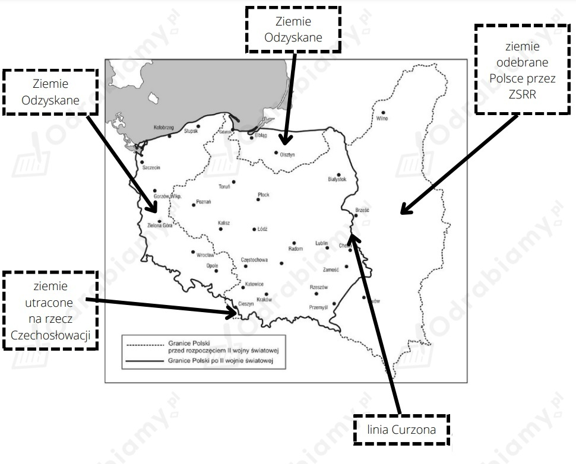

Wyścig pracy polegał na kilku- lub nawet kilkunastokrotnym przekraczaniu wyznaczonych norm przez pracowników zakładów pracy, np. w wydobyciu surowców. Stachanowcami, czyli przodownikami pracy nazywano pracowników, którzy znacznie przekroczyli normy pracy przewidziane do wykonania. Konsekwencją tego było podnoszenie norm pracy dla wszystkich pracowników bez podnoszenia wynagrodzeń za pracę.
Polska utraciła ziemie wschodnie (Kresy Wschodnie), otrzymując jako rekompensatę obszary na północy i zachodzie należące wcześniej do Niemiec. Były to tzw. Ziemie Odzyskane, które obejmowały tereny dużej części Śląska, ziemi lubuskiej, Pomorza Zachodniego ze Szczecinem, Pomorza Wschodniego z Gdańskiem oraz południowej części Prus Wschodnich, czyli Warmię i Mazury. Nowa granica państwa na zachodzie została oparta na Bugu, Odrze i Nysie Łużyckiej, a na wschodzie o linię Curzona. Po zakończeniu II wojny światowej przywrócono przebieg granicy polsko-czechosłowackiej z lat 1920-1938 (utrata przez Polskę Zaolzia; ostateczne porozumienie graniczne zapadło w 1958 r.). Polsce po II wojnie wojnie światowej przyznano obszar Kotliny Kłodzkiej, rejony Raciborza i Głubczyc. Przywrócono także przebieg granicy sprzed września 1938 r. na Spiszu i Orawie.
Polska, mimo że teoretycznie należała do obozu zwycięzców, utraciła w ostatecznym rachunku ok. 20% terytorium.

Mapa Polski po II wojnie światowej, źródło mapy: Google Grafika, opracowanie własne.
Przed nową (komunistyczną) władzą stanęło trudne zadanie: odbudowa zniszczonego kraju i zagospodarowanie poniemieckich tzw. Ziem Odzyskanych. Pozbawionemu fachowców i niepopularnemu rządowi komunistycznemu pomógł jednak entuzjazm Polaków, którzy nie czekając na rozstrzygnięcia polityczne, sami zaczęli odbudowę kraju. Powszechny zapał wykorzystali komuniści, organizując życie gospodarcze na wzór sowiecki.
3 stycznia 1946 r. wydano ustawę, na mocy której znacjonalizowano przemysł. Państwo przejęło na własność fabryki, kopalnie i zakłady przemysłowe zatrudniające więcej niż 50 robotników na zmianę. Powołano Centralny Urząd Planowania, kierowany przez prof. Czesława Bobrowskiego. Utworzono Komisję Specjalną do Walki z Nadużyciami i Szkodnictwem Gospodarczym, która miała prawo bez wyroku sądowego zamykać w obozach pracy tzw. "szkodników" i "spekulantów" oraz konfiskować ich majątki. Do 1948 r. komisja skazała ponad 10 tys. osób. W ten sposób zlikwidowano znaczną część prywatnego handlu, jednak nie zdołano go całkiem wyeliminować.
W 1947 r. ogłoszono Plan Odbudowy Gospodarczej - plan 3-letni (1947-1949), który zakładał, że w ciągu trzech kolejnych lat uruchomione zostaną najważniejsze zakłady przemysłowe: kopalnie, porty, stocznie, huty oraz fabryki maszyn, samochodów i traktorów. Dążono do zagospodarowania tzw. Ziem Odzyskanych oraz zapewnienia lepszych warunków bytowych ludności przez odbudowę i budowę nowych mieszkań oraz poprawę zaopatrzenia w żywność. Dzięki wielkiemu wysiłkowi społecznemu, współzawodnictwie pracy, realnym założeniom oraz równorzędnemu rozwojowi sektora konsumpcyjnego i inwestycyjnego - plan 3-letni został w zasadzie zrealizowany pomyślnie.
W Polsce decyzję o kolektywizacji rolnictwa podjął KC PPR we wrześniu 1948 r. Kolektywizacja polegała na przymusowym wstępowanie rolników do spółdzielni. Proces ten był połączony ze zjawiskiem łączenia gruntów rolnych we wspólnoty spółdzielcze. Przymus kolektywizacyjny doprowadził do spadku produkcji rolnej i stworzył perspektywę szybkiej ruiny rolnictwa w kraju.
Kolejnym planem polskiej gospodarki był plan 6-letni (1950-1955). Założenia planu były następujące: wzrost w stosunku do roku 1949 o ponad 150% produkcji przemysłowej, o 60% rolnej, o 112% dochodu narodowego. Były one od początku niemal niemożliwe do zrealizowania. Kierownictwo partyjne często nie brało pod uwagę czynnika ekonomicznego, bezkrytycznie wprowadzając w życie wytyczne z Moskwy. Mimo propagandy i wielkiego wysiłku - plan ten wykonano tylko w ok. 2/3, przy czym nowe fabryki powstały z reguły w starych okręgach przemysłowych - w Warszawie i na Śląsku. W ramach planu 6-letniego wybudowano m.in. Hutę im. Lenina w Nowej Hucie pod Krakowem, Fabrykę Samochodów Osobowych i Elektrociepłownię na Żeraniu w Warszawie, hutę aluminium w Skawinie, fabryki maszyn rolniczych w Płocku i Poznaniu, stocznie w Gdyni i Szczecinie. Załamanie planu 6-letniego stworzyło warunki do pierwszego w historii PRL społecznego buntu przeciwko władzy.
Kolektywizacja - proces łączenia gruntów chłopskich w gospodarstwa będące własnością spółdzielczą.
Nacjonalizacja - upaństwowienie, przejęcie przez państwo na własność przedsiębiorstw, zakładów przemysłowych i prywatnych banków.